RW MOPA 7 OSCILLATOR OUTPUT
BEAM PROFILE
HOME Return to main
page
The setup was using the R7 oscillators (1/4"x3" rod with single lamp, and 7mm x 115mm rod with single lamp) from r7osc.htm and images were obtained from a mini DV camcorder with a neutral density filter of OD 1.
The ruby laser used a beam expander and projected the image (2 to 3" in diameter) on a black background (fiberboard).
This use of a diffuse reflection is the main contributor to the spiking look of the recorded laser outputs due to speckle. This speckle spiking was most pronounced at high beam intensities. One company has a solution to this but would not work for pulse lasers. http://www.mellesgriot.com/pdf/0051.13.pdf
These images generally are 250x350 pixels in size. Each pixel value was plotted as recorded in the luminance scale of 0 to 255 for a 1 byte field. Only the chroma data was removed from the image file. Dark areas in the below plots are due to concentration of plot points and when enlarged the data becomes more accessible.
These graphs give some idea of beam quality but without measurements like M squared it is impossible to tell if these graphs represent strictly gaussian TEM00 mode. http://www.uslasercorp.com/Envoy/m2.htm
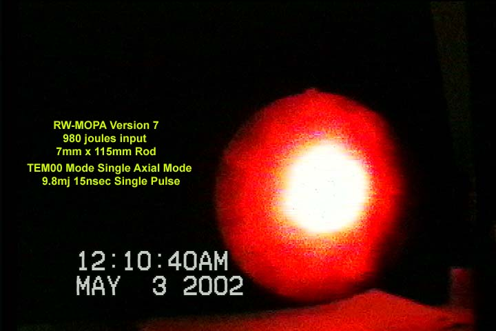
Typical CCD videocamcorder image used.
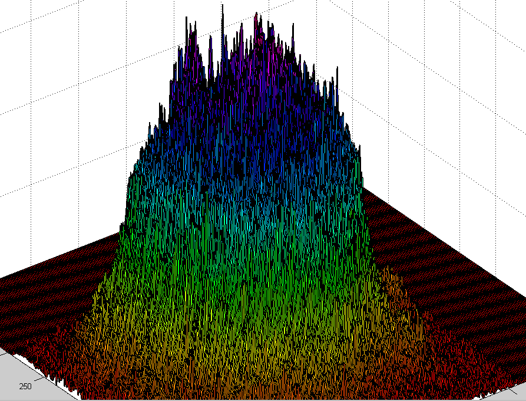
A Single ruby laser pulse. Aperture set at 0.060 inch (Fresnel Number 0.94) Due to the large aperture in regards to spatial control, more likely this profile seems to suggest a combination of TEM00 with other TEM modes and therefore would not be a single longitudinal mode. What is needed is both tests to obtain a spatial and temporal recording captured at the same time to determine.
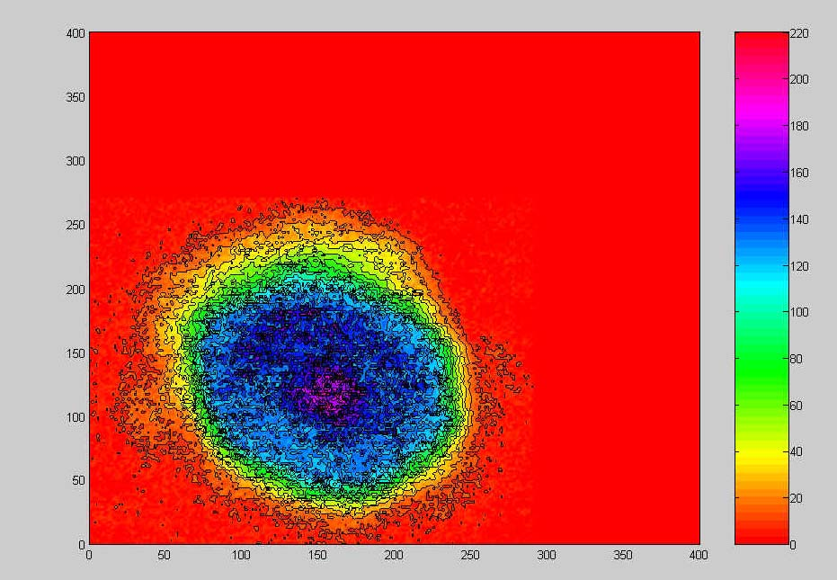
Contour view: Aperture set at 0.060 inch (Fresnel Number 0.94)
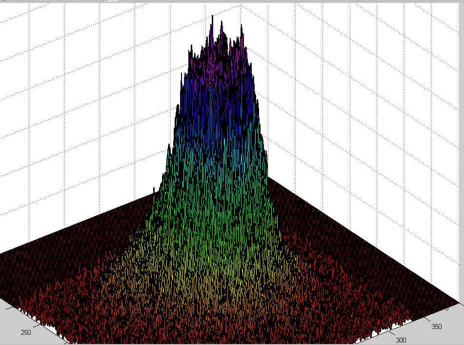
Ruby laser single pulse: 20nanoseconds 2.4 millijoule seems to suggest a more gaussian TEM00 mode.
Resonator aperture set at 0.042 inch. Fresnel Number is 0.51 helped assure TEM00
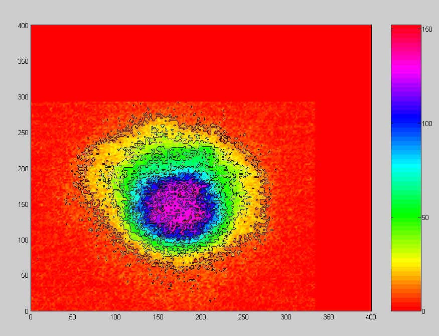
Contour view of the ruby laser pulse. Fresnel Number is 0.51
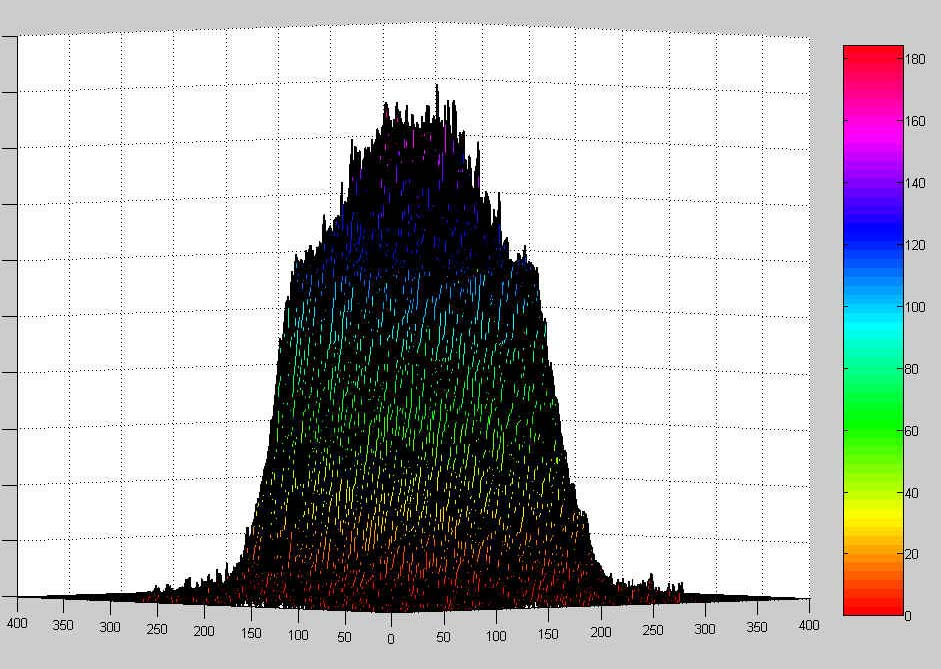
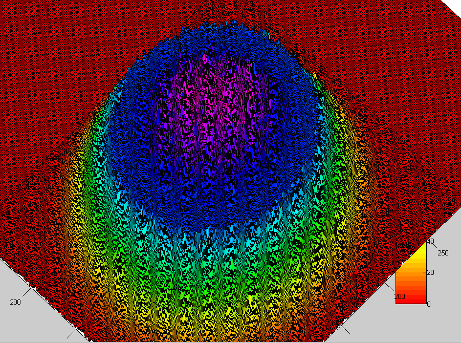
LEFT and Right: 7mw HENE laser as recorded by setup. Mfg indicated a TEM00 mode output but profile doesn't look gaussian using this CCD recording technique.
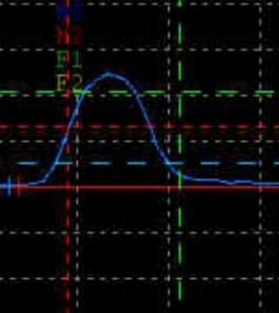
As a comparsion the 7mw HENE laser profile obtained from a rotating prism, fast photodiode, and-oscilloscope method. This method help better evaluate the HENE profile in two dimensions. Unfortunately this method doesn't work for pulse lasers. Notice the profile is different than the CCD recording technique used above. Here it looks close to a gaussian profile
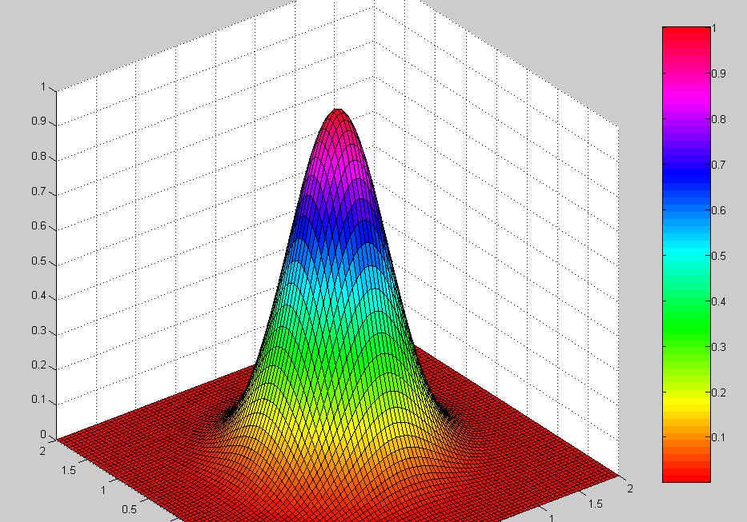
Ideal TEM00 mode output intensity.
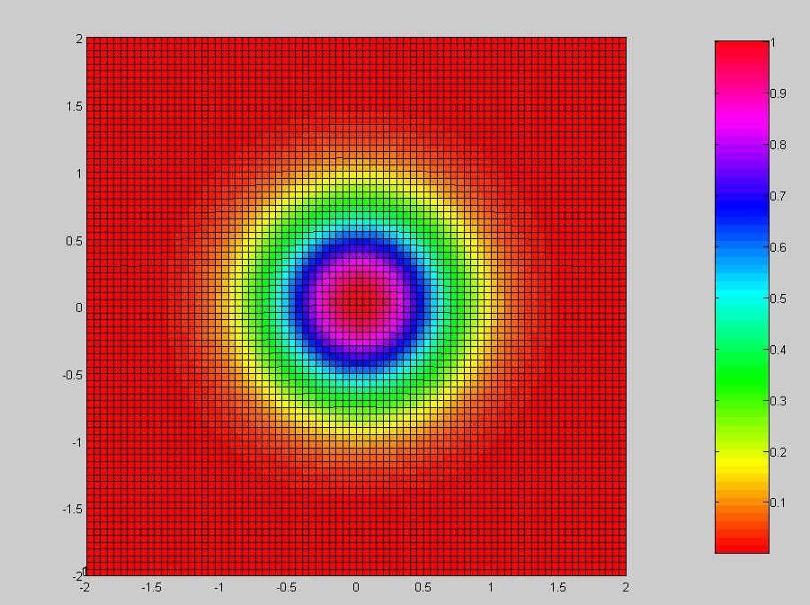
Top view of ideal TEM00 mode output.
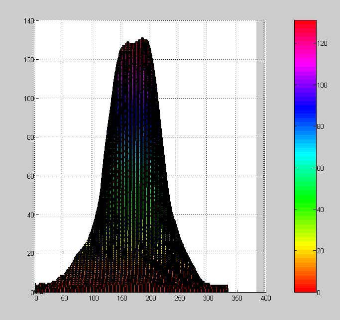
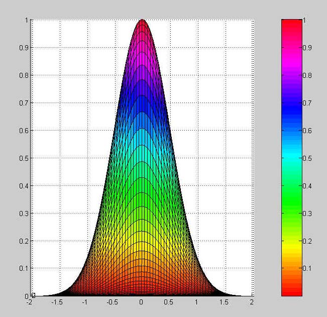
LEFT: Side view of ruby laser output as recorded by camcorder/diffusion screen where the image was smoothed by Adobe Photoshop using a gaussian blur specified at 4 pixels to reduce speckle. The capture card recorded the image from one of the two fields (interleaved) of a standard NTSC 29.97 frames per second video from the camcorder. Since this image exist only one of the two fields, then no other frames can be used to average the noise out and the post processing was needed.
RIGHT: Compared to side view of ideal TEM00 mode.
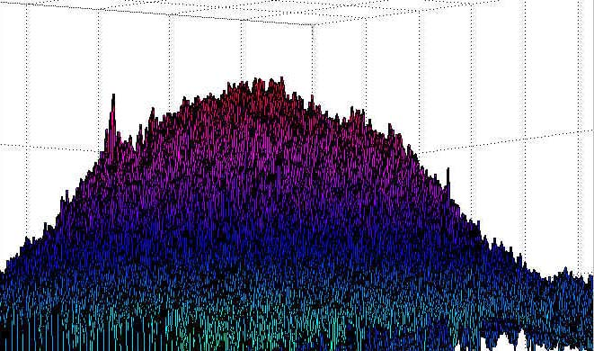
This image of the Ruby laser at 4mj and 0.042 inch aperture was obtained with a cheap ultra miniature camera Clover Electronics B/W CM-625 (www.cloverusa.com).
This camera allowed the removal of the lens and was placed in a light tight box 6 inches away from a 1/2 inch aperture. The ruby laser without beam expander was bounced off a prism (any wedge type glass) to obtain a 4 percent reflection from the first surface. Then this beam passed through a 6.5OD absorption filter covering the 1/2 inch aperture and then directly onto the CCD chip. This setup has considerable dark current noise due to the heating that the CCD camera consumes. The above image shows a relative smooth curved beam profile top and that the spiking and very rough beam profile tops seen on the camcorder/diffused screen setup was more likely caused by the speckle effect. The camera had some difficulties as interference patterns from the glass surface of the CCD and dust etc caused some diffractions which added to the noise and distortions in the image as can be seen below.
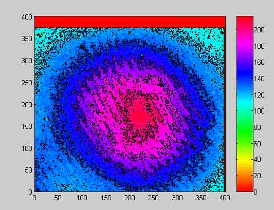
Contour plot of the above Ruby laser 4mj pulse at 0.046 inch aperture. Interference patterns was created by the CCD window. Metallic ND filters also cause these effects, so an absorption filter was used instead.
The image processing for this setup is as follows:
A video capture card was used. In our case, Digital Processing Systems PVR-2500. The video was recorded to a PC hard drive. Then this short video clip was exported as an image sequence of TGA files and the specific TGA file was edited by Adobe Photoshop. The DPS capture/playback card software allowed exporting by frame or by field 1 or field 2 of the frame. During playback, which field the image was recorded on was noted and only that field was exported to TGA.
Adobe Photoshop LE: Cropped image. Removed color by selecting grayscale. Saved image as a BMP file.
Then imported image into MATLAB 6 using the following code:
%Project Beam profile: R.Michael
clc, clear
% Task 1
% read in imagefile.
disp(' '), disp(' '), disp('task 1 read in bprof.bmp'), disp(' ')
sp4=imread('bprof.bmp','bmp');
%setup x,y,z data
z=zeros(401,401);
[x,y]=meshgrid(0:400);
[a,b]=size(sp4);
for t=1:a
for r=1:b
z(t,r)=sp4(t,r);
end
end
disp(' '), disp(' '), disp('task 2 display beam profile as contour and
surface')
%plot the image as 2D contour map with color
figure(1),contour(x,y,z,10,'k')
hold on
pcolor(x,y,z)
shading interp
hold off
colormap hsv
colorbar
%plot the image data as surface plot
figure(2),surf(x,y,z)
colormap hsv
colorbar
z=zeros(81,81);
% plot an Ideal TEM00 Beam
[x,y]=meshgrid(-2:.05:2);
c=sqrt(x.^2+y.^2)+ eps;
z=exp(-(2*c.^2)/1);
figure(3),surf(x,y,z)
colormap hsv
colorbar